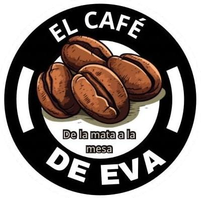
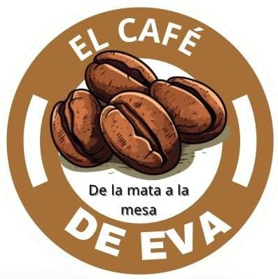
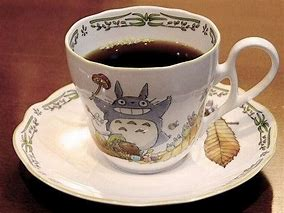
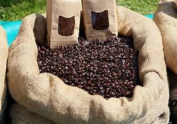
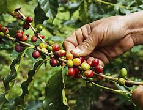
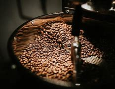
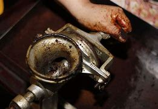

Misión y Visión

Misión
Nuestra misión en El Café de Eva es ofrecer a nuestros clientes un café arábigo de alta calidad, cultivado con dedicación y pasión. Nos comprometemos a brindar una experiencia auténtica y memorable para los amantes del café, con productos frescos y cuidadosamente seleccionados que resaltan el valor de la tradición cafetera y el esfuerzo de jóvenes emprendedores comprometidos con la excelencia.

Visión
Ser reconocidos como una marca de café artesanal líder en el mercado, destacada por su compromiso con la calidad, la autenticidad y el cuidado en cada etapa del proceso, desde la cosecha hasta el producto final. Queremos inspirar a más personas a disfrutar y valorar el buen café y consolidar El Café de Eva como un referente de sabor, tradición y responsabilidad social en el mundo del café.
Datos Importantes

¿De qué se trata?
Nuestro emprendimiento, "El Café de Eva," se centra en ofrecer un café de alta calidad, específicamente una variedad exclusiva de café arábigo, que se cosecha solo una vez al año. Nos dedicamos a la venta de este café en dos presentaciones: en grano y molido, para que nuestros clientes puedan disfrutar del auténtico sabor del café en su hogar.
Somos un grupo de jóvenes emprendedores y estudiantes de la Unidad Educativa Fiscal Dolores Sucre, comprometidos con llevar este producto único a las personas que aprecian el buen café. Nuestro objetivo es hacer que más personas descubran y se enamoren de esta variedad tan especial, cultivada con dedicación y pasión.

Importancia
Nuestro café en "El Café de Eva" es un producto exclusivo y de alta calidad, centrado en la variedad de café arábigo, cosechada solo una vez al año para conservar su frescura y sabor excepcionales. Este café ha sido cultivado y procesado con cuidado, lo que lo convierte en una experiencia única para los amantes del buen café.
La importancia de nuestro producto radica en su autenticidad y su conexión con la tradición del café. Ofrecemos el café en grano y molido para que cada cliente lo disfrute a su manera, llevándose a casa no solo una bebida, sino una experiencia de calidad superior. Con cada taza, "El Café de Eva" busca acercar a las personas a un café genuino y cuidadosamente seleccionado.

Cosecha
Nuestro café en "El Café de Eva" se distingue por su exclusividad y calidad, ya que se cosecha solo una vez al año. Este proceso de cosecha limitada asegura que cada grano alcance su punto óptimo de madurez y sabor, permitiendo conservar su frescura y notas aromáticas únicas. Al elegir nuestro café arábigo, los clientes disfrutan de un producto cuidadosamente recolectado, que refleja la dedicación y el esfuerzo de quienes trabajan la tierra para obtener un café verdaderamente especial.

Preparación
El café de "El Café de Eva" se destaca no solo por su calidad, sino también por el cuidado que ponemos en su preparación. Cada grano de nuestro café arábigo pasa por un proceso de selección y tostado controlado para asegurar que mantenga sus notas aromáticas y su sabor excepcional. Ya sea en su presentación en grano o molido, nuestro café es preparado con dedicación para ofrecer a los amantes del café una experiencia auténtica y llena de matices, ideal para disfrutar en casa.

Consejos Básicos Para Su Preparación
Para preparar un buen café, usa granos frescos y muélelos justo antes de preparar. Mide la cantidad de café y agua correctamente,
y calienta el agua a unos 90-96°C. Elige el método de preparación adecuado y asegúrate de que los equipos estén limpios.
Guarda los granos en un recipiente hermético en un lugar fresco y oscuro.